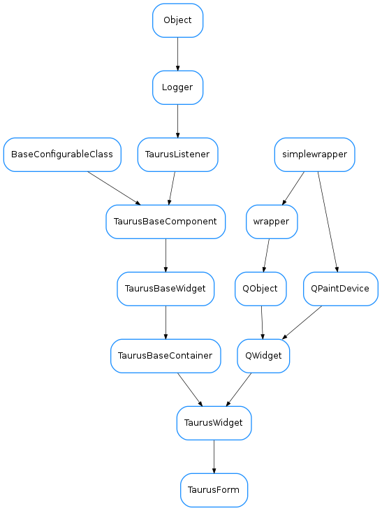

TaurusForm¶

-
class
TaurusForm(parent=None, formWidget=None, buttons=None, withButtons=True, designMode=False)[source]¶ Bases:
taurus.qt.qtgui.container.tauruswidget.TaurusWidgetA form containing specific widgets for interacting with a given list of taurus attributes and/or devices.
Its model is a list of attribute and/or device names to be shown. Each item is represented in a row consisting of a label, a read widget, a write widget, a units widget and an “extra” widget (some of them may not be shown) which are vertically aligned with their counterparts from other items.
By default a
TaurusValueobject is used for each item, but this can be changed and specific mappings can be defined using thesetCustomWidgetMap()method.Item objects can be accessed by index using a list-like notation:
form = TaurusForm() form.model = ['sys/tg_test/1'+a for a in ('short_image','/float_scalar','/double_scalar')] form[0].labelConfig = 'dev_alias' form[-1].writeWidgetClass = 'TaurusWheelEdit' print(len(form)) # --> outputs '3' (the length of the form is the number of items)
By default, the form provides global Apply and Cancel buttons.
You can also see some code that exemplifies the use of TaurusForm in Taurus coding examples
-
addModels(modelNames)[source]¶ Adds models to the existing ones:
Parameters: modelNames ( sequence<str>) – the names of the models to be addedSee also
-
compact¶
-
getCustomWidgetMap()[source]¶ Returns the map used to create custom widgets.
Return type: dict<str,tuple>Returns: a dictionary whose keys are device type strings (i.e. see PyTango.DeviceInfo) and whose values are tuples of classname,args,kwargs
-
getFormWidget(model=None)[source]¶ Returns a tuple that can be used for creating a widget for a given model.
Parameters: model ( str) – a taurus model name for which the new item of the form will be createdReturn type: tuple<type,list,dict>Returns: a tuple containing a class, a list of args and a dict of keyword args. The args and the keyword args can be passed to the class constructor
-
getItemByModel(model, index=0)[source]¶ returns the child item with given model. If there is more than one item with the same model, the index parameter can be used to distinguish among them Please note that his index is only relative to same-model items!
-
model¶
-
modifiableByUser¶ whether the user can change the contents of the widget
Return type: boolReturns: True if the user is allowed to modify the look&feel
-
removeModels(modelNames)[source]¶ Removes models from those already in the form.
Parameters: modelNames ( sequence<str>) – the names of the models to be removedSee also
-
setCustomWidgetMap(cwmap)[source]¶ Sets a map map for custom widgets.
Parameters: cwmap ( dict<str,tuple>) – a dictionary whose keys are device type strings (i.e. seePyTango.DeviceInfo) and whose values are tuples of classname,args,kwargs
-
setModifiableByUser(modifiable)[source]¶ sets whether the user can change the contents of the form (e.g., via Modify Contents in the context menu) Reimplemented from
TaurusWidget.setModifiableByUser()Parameters: modifiable ( bool) –See also
TaurusWidget.setModifiableByUser()
-
useParentModel¶ Returns whether this component is using the parent model
Return type: boolReturns: True if using parent model or False otherwise
-
withButtons¶
-